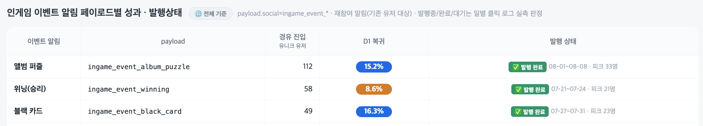

솔리테어 시티 저니 · 페이스북 인스턴트 게임 · 실측 구간 2026-07-20 ~ 08-08 · 작성 08-11
New Game Featuring 기간에는 인게임 메뉴로 유입이 몰림. 신규의 절대다수를 차지하지만 D1이 5.9%로 가장 낮음. 이 구간의 DAU를 제품 성과로 읽으면 종료 후 판단이 어긋남.
웹게임허브 순수 41.9명 + 게이밍탭 26.5명 = 일 68.4명. 이 규모에서는 하루 10명대 채널도 무시할 수 없는 비중이 됨.
| 기준 | 이벤트 유입 | 자연 유입 대비 |
|---|---|---|
| 발행 기간 하루 평균 | 12.8명 | 18.7% |
| 피크일 | 25.7명 | 37.6% |
| 이벤트 1건 누적 | 약 73명 | — |
질은 D1까지만 우위가 확인됨 — 인게임 이벤트 D1 10.3~22.4% 대 부스팅 5.9%. 다만 D7·D14는 이벤트별 표본이 49~112명이라 판정할 수 없음(부록 A 참조). 자연 유입 전체를 이기는 것도 아님 — 웹게임허브 순수가 34.6%로 더 높음.
즉 성장 레버가 아니라 보조 채널임. 유입 규모를 키우는 것이 목적이라면 크로스프로모가 같은 기간 6,314명으로 이벤트의 29배임.
| 구분 | 내용 |
|---|---|
| 비용 | 배너 7종 × 2규격 = 14장 · 아트 1명이 다른 업무와 병행해 약 2주(2026-07-16 요청 → 07월 말 완료) · 기획은 Event Info 문구 7세트 |
| 산출 | 이벤트 1건당 약 73명 → 7종 약 511명 · 월 2회 편성으로 3.5개월 운영 · 부스팅 종료 후 자연 유입 대비 +19%(피크 +38%) |
| 질 | D1이 부스팅의 3배. 단 D7 이후는 표본 부족으로 판정 불가 |
같은 기간 크로스프로모 유입이 6,314명으로 인게임 이벤트의 29배임. 아트 리소스가 빠듯해 하나만 골라야 한다면 크로스가 먼저이고, 인게임 이벤트는 크로스 슬롯이 없거나 이미 찼을 때 채우는 자리임.
신작이 첫 게임이라 크로스 대상이 없는 경우에는 이 조건이 자동으로 충족되므로, 인게임 이벤트의 상대 가치가 올라감.
이벤트로 들어온 유저도 entrypoint_join.entry가 web_games_hub로 찍히고 payload.social로만 구분됨. 분리하지 않으면 웹게임허브 성과가 부풀려짐. 이 문서의 수치는 분리한 값임.
가입일 기준 신규 유저 · 2026-07-20 ~ 08-08(20일) · D1 = 가입 다음날 접속(raw 기준으로 전 채널 통일)
| 채널 | 신규 | 일 평균 | D1 |
|---|---|---|---|
| 인게임 메뉴 — 런칭 부스팅 | 17,344 | 867 | 5.9% |
| web_games_hub — 순수 | 837 | 41.9 | 34.6% |
| facebook_gaming_tab | 530 | 26.5 | 13.6% |
| 인게임 이벤트 — 블랙 카드 | 49 | 9.8 | 22.4% |
| 인게임 이벤트 — 앨범 퍼즐 | 112 | 14.0 | 17.0% |
| 인게임 이벤트 — 위닝 | 58 | 14.5 | 10.3% |
일 평균은 채널별 실제 노출 기간 기준임 — 자연 유입은 20일, 인게임 이벤트는 각 발행 기간(위닝 4일 · 블랙 카드 5일 · 앨범 퍼즐 8일).
| 채널 | 신규 | D1 | D7 | D14 |
|---|---|---|---|---|
| organic | 20,465 | 6.6% | 2.0% | 1.1% |
| 앨범 퍼즐 | 112 | 15.2% | 4.5% | — |
| 위닝 | 58 | 8.6% | 12.1% | 3.4% |
| 블랙 카드 | 49 | 16.3% | 10.2% | 0.0% |
D14가 위닝 3.4%(2명)·블랙 카드 0.0%(0명)이라 우위를 확증할 수 없음. 위닝의 D7이 D1보다 높은 것도 표본 58명에서 오는 노이즈임. D1까지만 근거로 쓸 것. 이 표는 stat 적재본 기준이라 부록 A 상단(raw 기준)과 숫자가 다름.

출처 = 28번 유입 세그먼트 리포트. 한 문서 안에서 stat 기준과 raw 기준을 섞어 인용하지 말 것.